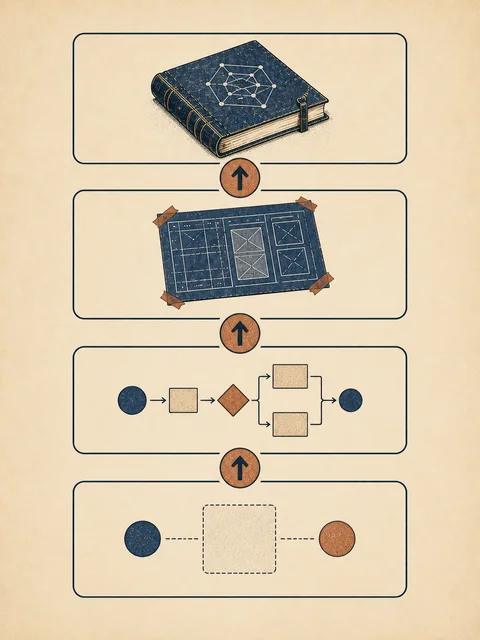
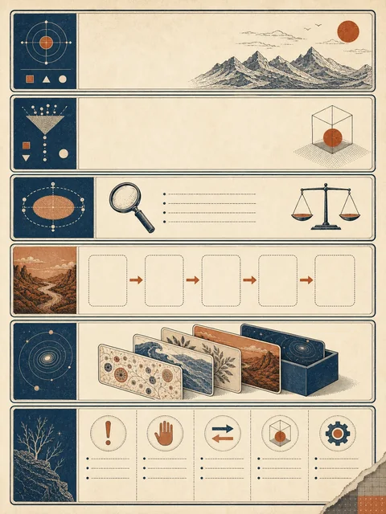

隐含经验
整理者记得课程术语，也知道哪些听不清的地方要回听
把一次课堂录音整理成别人也能复用的做法
 VER. 2608.1
Built with impress.js
VER. 2608.1
Built with impress.js
本节结束时，你能判断一套做法是否值得复用，并写出别人可以照着执行的 Skill 说明书
“这节课的录音整理得很好，下次照着做”
整理者记得课程术语，也知道哪些听不清的地方要回听
下一次的课程、说话人、录音质量和配套 Slides 都可能不同
保留原始录音、带时间转写、结构化整理和教师复核可以重复使用
能够复用的不是这份笔记，而是产生这份笔记的做法
同一个录音整理任务，可以只保存一句提示，也可以留下完整 Skill
“把这段课堂录音整理成笔记”
固定标题、术语、例子和待核实项等栏目
固定“转写—整理—对照 Slides—教师复核”顺序
再写清适用录音、所需材料、失败处理和版本

先用两段不同录音检验这套做法
下一位使用者拿到录音和配套材料后，应当能够独立完成整理
把课堂录音整理成可复查的课程笔记
适用于已获授权、声音可辨认且有课程信息的录音
原始录音、课程 Slides、术语表和输出要求
保留原件、转写、整理、对照材料和教师复核
带时间位置的转写、结构化笔记和待核实项
无授权、音频损坏或关键内容无法辨认时停止并交给教师

录音会变化，整理步骤和验收方法应当保持稳定
不要把本次课程名称和术语写死在步骤中，要把它们作为输入
| 输入（每次变化） | 固定步骤（稳定） | 输出与验收（稳定） | 不适用／停止 |
|---|---|---|---|
| 课堂录音、课程 Slides、术语表、输出要求 | 保留原件 → 带时间转写 → 结构化整理 → 对照 Slides → 教师复核 | 原始转写、课程笔记和待核实项；术语与时间位置可回查 | 未获授权、音频损坏或关键内容无法辨认 |
下一位使用者必须知道需要哪些材料、怎样复查，以及何时不能继续
研讨课有多人发言，原来的单人讲授规则还能用多少
| 检查项 | 讲授课录音 | 研讨课录音 |
|---|---|---|
| 输入 | 录音、Slides、术语表 | 录音、议程、说话人名单和术语表 |
| 保持 | 保留原件、时间转写、结构化整理和复核 | 继续保留相同步骤与回查方式 |
| 修改 | 按教师讲授结构整理 | 增加说话人、观点差异、决定和待办 |
| 停止 | 关键术语无法辨认时交给教师 | 说话人无法确认时标记未知，不猜测身份 |
换一种录音仍能说明保留、修改和停止，才算知道 Skill 的适用范围
能否只凭录音、配套材料和说明书开始整理
能否沿时间位置复查术语、遗漏和待核实项
能否更新术语表、输出模板和已知失败记录
下一讲将用清晰录音、多人录音和损坏录音测试它
能够重复成功，也能说明失败发生在哪里，才算真正可复用
Skill 把一套已经试用过的做法写成别人可以执行、检查和停止的说明
提示只表达一次任务，Skill 还要写明输入、检查和停止
课堂录音 Skill 需要原始录音、配套材料、整理步骤和输出要求
无授权、音频损坏或无法辨认时停止并交给教师
换成多人研讨录音，检查哪些规则需要修改
真正可复用的 Skill，让下一位使用者知道怎样开始、怎样检查、何时停下
lecture-notes Skill 需要哪些输入，输出怎样验收？